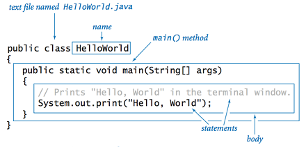

Many people recognize the Java coffee cup logo. Yet, have you ever wondered what Java is? Java is a high-level, object-oriented programming language. Java was created to facilitate communication between devices. Security is one hallmark of Java. Being available across different systems and networks is another highlight. Java is often used to make websites more dynamic and entertaining.
INTRODUCTION
Java is a high level language. It is a widely used programming language expressly designed for use in the distributed environment of the internet. It is the most popular programming language for Android smartphone applications and is among the most favored for edge device and internet of things development. Java was designed to have the look and feel of the C++ language, but it is simpler to use than C++ and enforces an object-oriented programming model. Java can be used to create complete applications that may run on a single computer or be distributed among servers and clients in a network. It can also be used to build a small application module or applet for use as part of a webpage.
Java is an object-oriented language. It is one of the most top rated programming language among all. The syntax of Java is somehow similar to C++ programming language. It is influenced by C, C++. Some programmer finds Java easier than C++. It is because Java is a high-level programming language whereas C++ is a middle-level programming language. Most importantly, It is a cross-platform language. It can run on any machine despite the machine’s architecture. History of java language is unique in itself specially its naming history.
The motto of Java is: Write Once, Run Anywhere.
HISTORY
Many people recognize the Java programming language in just a matter of seconds by just seeing the coffee logo. But have you ever wondered why there is a coffee in the logo of a programming language?
History of java is worth reading. Java was developed by Sun Microsystems by a group of engineers known as The Green Team. Java changed its name three times. Initially, it is known as the Oak. Unfortunately, they had to change the name because Oak was already a trademark of Oak Technologies. After a lot of thinking team named the language ‘Green‘. Many team members were not happy with the name green. During name searching meeting, one of the team member put the example of word Java (It was one of the most popular coffee at that time). In the meantime, Silk and DNA were also considered as the name but both names had the issues of the trademark so the Java name was considered to be just perfect. All members liked the name.
What is JAVA?
Did you know that over three billion devices run the Java programming language? The language is known for being versatile and secure.
Java also helps makes websites more engaging. Java is used in many other technologies such as Automated Teller Machines (ATMs) and cameras. Many online games use Java, too.
Another way that Java stands out is with its cool name and logo. The steaming coffee cup logo is recognized by millions of people around the world.
JAVA IS AN OBJECT ORIENTED LANGUAGE
Java is defined as an object-oriented language similar to C++, but simplified to eliminate language features that cause common programming errors. The source code files (files with a .java extension) are compiled into a format called bytecode (files with a .class extension), which can then be executed by a Java interpreter. Compiled Java code can run on most computers because Java interpreters and runtime environments, known as Java Virtual Machines (VMs), exist for most operating systems, including UNIX, the Macintosh OS, and Windows. Bytecode can also be converted directly into machine language instructions by a just-in-time compiler (JIT). In 2007, most Java technologies were released under the GNU General Public License.
JAVA ON THE WEB
Java is a general purpose programming language with a number of features that make the language well suited for use on the World Wide Web. Small Java applications are called Java applets and can be downloaded from a Web server and run on your computer by a Java-compatible Web browser. Applications and websites using Java will not work unless Java is installed on your device. When you download Java, the software contains the Java Runtime Environment (JRE) which is needed to run in a Web browser. A component of the JRE, the Java Plug-in software allows Java applets to run inside various browsers.
THE JAVA LANGUAGE
Like any programming language, the Java language has its own structure, syntax rules, and programming paradigm. The Java language's programming paradigm is based on the concept of OOP, which the language's features support.
The Java language is a C-language derivative, so its syntax rules look much like C's. For example, code blocks are modularized into methods and delimited by braces ({ and }), and variables are declared before they are used.
Structurally, the Java language starts with packages. A package is the Java language's namespace mechanism. Within packages are classes, and within classes are methods, variables, constants, and more.

THE JAVA COMPILER
When you program for the Java platform, you write source code in .java files and then compile them. The compiler checks your code against the language's syntax rules, then writes out bytecode in .class files. Bytecode is a set of instructions targeted to run on a Java virtual machine (JVM). In adding this level of abstraction, the Java compiler differs from other language compilers, which write out instructions suitable for the CPU chipset the program will run on.
CODE EXAMPLE:
Package helloworld;
public class HelloWorld {
public static void main(String[] args){
System.out.println("Hello World!!!");
}//End of main
}//End of HelloWorld Class
OUTPUT:
Hello World!!!
JAVA IS BEING USED IN FOLLOWING AREAS:
Desktop Applications
Andriod Applications
Embedded Systems
Game Development
Application Servers
Web Servers
Web Development
Others
CODE:
<!DOCTYPE html>
<html lang="en">
<head>
<meta charset="utf-8">
<title> Java </title>
</head>
<body>
<header>
<h1> LEARN TECH HERE <br />
ALL ABOUT COMPUTER LANGUAGES</h1>
<img src="header.jpg" alt="tech" width="1200" height="200" />
</header>
<nav>
<ul>
<li><a href="main.html"> Home </a></li>
<li><a href="file1.html">Programming Languages </a>
<ul>
<li><a href="file6.html">JAVA</a></li>
</ul>
</li>
<li><a href="file4.html"> Scripting Languages</a>
<ul>
<li><a href="file7.html">JavaScript</a></li>
</ul>
</li>
<li><a href="file5.html"> Markup Languages</a>
<ul>
<li><a href="file8.html">HTML </a></li>
</ul>
</li>
<li><a href="file2.html"> About Us </a></li>
<li><a href="file3.html"> Contact Us </a></li>
</ul>
</nav>
<!-- Using Id's -->
<h1 id="java"> JAVA PROGRAMMING LANGUAGE</h1>
<p>Many people <strong>recognize</strong> the Java <strong>coffee cup logo</strong>. Yet, have you ever wondered <strong>what Java is?</strong> Java is a <strong>high-level, <u>object-oriented</u> programming language.</strong> Java was created to facilitate communication between <strong>devices</strong>. Security is one hallmark of Java. Being <strong>available</strong> across different <strong>systems</strong> and <strong>networks</strong> is another highlight. Java is often used to make <strong>websites</strong> more dynamic and <strong>entertaining</strong>.</p>
<h2> INTRODUCTION </h2>
<p> Java is a <strong>high level language</strong>. It is a widely used programming language expressly <strong>designed</strong> for use in the <strong>distributed environment</strong> of the internet. It is the most popular programming language for <strong>Android smartphone applications</strong> and is among the most favored for <strong>edge device</strong> and <strong>internet of things</strong> development. Java was designed to have the look and feel of the <strong>C++ language</strong>, but it is simpler to use than <strong>C++</strong> and enforces an object-oriented programming model. Java can be used to create complete applications that may run on a single computer or be distributed among servers and clients in a network. It can also be used to build a <strong>small application module</strong> or applet for use as part of a <strong>webpage.</strong><br />
Java is an object-oriented language. It is one of the most <strong>top rated</strong> programming language among all. The syntax of Java is somehow similar to C++ programming language. It is influenced by C, C++. Some programmer finds Java easier than C++. It is because Java is a high-level programming language whereas C++ is a middle-level programming language. Most importantly, It is a cross-platform language. It can run on any machine despite the machine’s architecture. History of java language is unique in itself specially its naming history.
The motto of Java is: <q><strong> Write Once, Run Anywhere. </strong></q></p>
<h2> HISTORY </h2>
<p>Many people <strong>recognize</strong> the Java programming language in just a matter of <strong>seconds</strong> by just seeing the <strong>coffee logo</strong>. But have you ever wondered why there is a coffee in the <strong>logo</strong> of a programming language? <br />
History of java is <strong>worth reading</strong>. Java was developed by <strong>Sun Microsystems</strong> by a group of engineers known as The <strong>Green Team</strong>. Java changed its name three times. Initially, it is known as the <strong>Oak</strong>. Unfortunately, they had to change the name because Oak was already a <strong>trademark</strong> of <strong>Oak Technologies</strong>. After a lot of thinking team named the language <strong>‘Green‘</strong>. Many team members were not happy with the name green. During name searching meeting, one of the team member put the example of word <strong>Java (It was one of the most popular coffee at that time)</strong>. In the meantime, <strong>Silk</strong> and <strong>DNA</strong> were also considered as the name but both names had the <strong>issues</strong> of the trademark so the Java name was considered to be just <strong>perfect</strong>. All members <strong>liked</strong> the name. </p>
<img src="java2.jpeg" alt="java" height="300" width="1000" />
<h2> What is JAVA? </h2>
<p>Did you know that over <strong>three billion</strong> devices run the Java programming language? The language is known for being <strong>versatile</strong> and <strong>secure</strong>. <br />
Java also helps makes <strong>websites more engaging</strong>. Java is used in many other technologies such as <strong>Automated Teller Machines (ATMs)</strong> and <strong>cameras</strong>. Many online <strong>games</strong> use Java, too. <br />
Another way that Java stands out is with its cool name and logo. The steaming coffee cup logo is recognized by <strong>millions</strong> of people around the <strong>world</strong>. </p>
<h2> JAVA IS AN OBJECT ORIENTED LANGUAGE </h2>
<p> Java is defined as an <strong>object-oriented language</strong> similar to C++, but simplified to eliminate language features that cause common programming <strong>errors</strong>. The source code files (files with a <strong>.java extension</strong>) are compiled into a format called <strong>bytecode</strong> (files with a <strong>.class extension</strong>), which can then be executed by a Java <strong>interpreter</strong>. Compiled Java code can run on most computers because Java interpreters and runtime environments, known as <strong>Java Virtual Machines (VMs)</strong>, exist for most <strong>operating systems</strong>, including <strong>UNIX, the Macintosh OS, and Windows</strong>. Bytecode can also be converted directly into machine language instructions by a <strong>just-in-time compiler (JIT)</strong>. In 2007, most Java technologies were released under the <strong>GNU General Public License.</strong> </p>
<h2> JAVA ON THE WEB </h2>
<p> <a href="#java">Java</a> is a general purpose programming language with a number of features that make the language well suited for use on the <strong>World Wide Web</strong>. Small Java applications are called <strong>Java applets</strong> and can be downloaded from a <strong>Web server</strong> and run on your computer by a <strong>Java-compatible Web browser</strong>. <br />
<strong>Applications</strong> and <strong>websites</strong> using Java will not work unless Java is installed on your <strong>device</strong>. When you download Java, the software contains the <strong>Java Runtime Environment (JRE)</strong> which is needed to run in a <strong>Web browser</strong>. A component of the <strong>JRE</strong>, the <strong>Java Plug-in software</strong> allows Java applets to run inside various <strong>browsers</strong>.</p>
<img src="java1.jpg" alt="java1" height="300" width="600"/>
<h2> THE JAVA LANGUAGE </h2>
<p>Like any programming language, the Java language has its own <strong>structure, syntax rules</strong>, and programming <strong>paradigm</strong>. The Java language's programming paradigm is based on the <strong>concept of OOP</strong>, which the language's features support.<br />
The Java language is a <strong>C-language derivative</strong>, so its syntax rules look much like C's. <strong>For example</strong>, code blocks are modularized into <strong>methods</strong> and delimited by braces <strong>({</strong> and <strong>})</strong>, and <strong>variables</strong> are declared before they are used. <br />
Structurally, the Java language starts with <strong>packages</strong>. A package is the Java language's <strong>namespace mechanism</strong>. Within packages are <strong>classes</strong>, and within classes are <strong>methods, variables, constants</strong>, and more. </p>
<h2> THE JAVA COMPILER </h2>
<p> When you program for the Java <strong>platform</strong>, you write source code in <strong>.java files</strong> and then compile them. The compiler checks your code against the language's syntax rules, then writes out bytecode in <strong>.class files</strong>. Bytecode is a set of <strong>instructions</strong> targeted to run on a <strong>Java virtual machine (JVM)</strong>. In adding this level of abstraction, the Java compiler differs from other language compilers, which write out instructions suitable for the CPU chipset the program will run on. </p>
<!-- Using Entities -->
<h2> CODE EXAMPLE: </h2>
<code>
Package helloworld; <br />
public class HelloWorld { <br />
public static void main(String[] args){ <br />
System.out.println("Hello World!!!"); <br />
}//End of main <br />
}//End of HelloWorld Class <br />
</code>
<h3> OUTPUT: </h3>
<p><strong> Hello World!!! </strong></p>
<iframe width="560" height="315" src="https://www.youtube.com/embed/c_IaC5n0I00" allow="accelerometer; autoplay; encrypted-media; gyroscope; picture-in-picture" allowfullscreen></iframe>
<h2> JAVA IS BEING USED IN FOLLOWING AREAS: </h2>
<ul>
<li>Desktop Applications</li>
<li>Andriod Applications</li>
<li>Embedded Systems</li>
<li>Game Development</li>
<li>Application Servers</li>
<li>Web Servers</li>
<li>Web Development</li>
<li>Others</li>
</ul>
<h2> CODE: </h2>
<progress max="100" value="80" >
</progress>
<br>
<br>
<br>
<br>
<footer> Copyright@LearnTechHere2018 </footer>
</body>
</html>